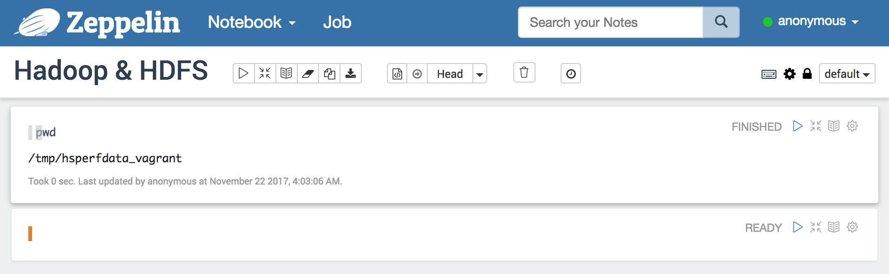
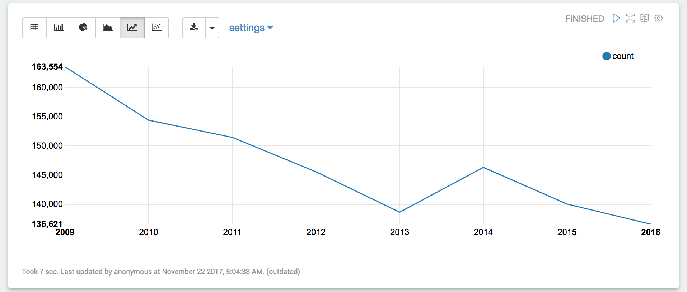
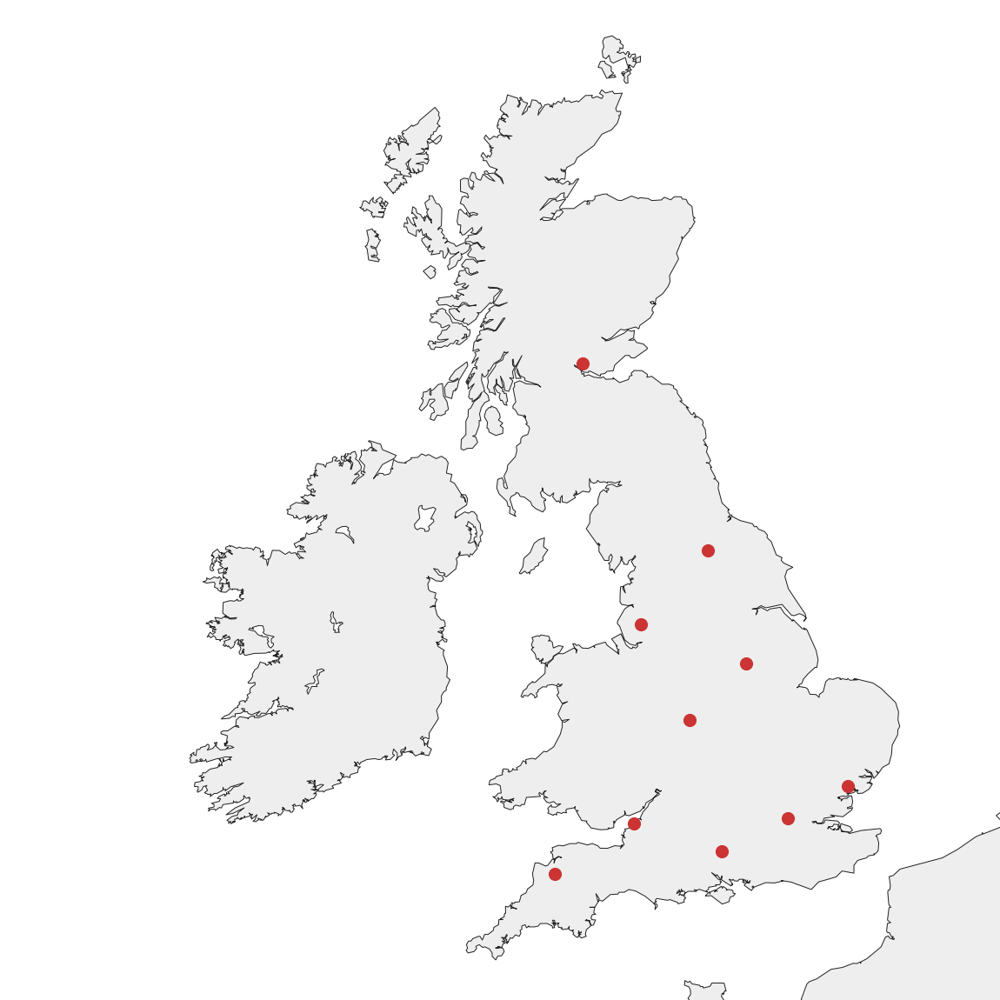

This guide is designed to introduce the reader into the field of Big Data by experimenting with different technologies. It provides all the necessary tools in form of a virtual machine. With the Big Data software infrastructure already in place, the guide is able to focus solely on using the tools to extract new insights from a set of raw data.
The following software and hardware is needed to work through the practical examples of the guide:
Be aware that the guide will consume more than 3 GB of internet traffic. Besides the folder of the guide itself, that provides the data set, the virtual machine will also install a number of different software tools upon starting it for the first time.
Big Data has become a driving force of change in nearly every sector of the economy and government imaginable. But while the technologies and methods become better and more widely used, there is a rising demand for talent in the field as well. Interested individuals are always faced with a harsh learning curve in order to get started with Big Data. Be it that the available information is mainly technical or theoretical, or that it takes a considerate amount of time to even get a basic infrastructure working.
This guide was designed to circumvent those problems. It focuses on applying different freely available technologies to a set of example data. In order to achieve that focus, the software infrastrucure necessary is provided via a virtual machine. The reader just needs to start the VM and can begin experimenting with the data through a user-friendly web interface. All the tools used in the guide are open source and freely available to make Big Data as accessible as possible to the reader.
After working through the guide, the reader will be able to utilize the provided software infrastructure on his or her own sets of data. The introduced technologies and methods allow for a basic exploratory study of data sets that result in the creation of new analytical insights into the data as well as the creation of supporting visualizations.
In the end, this guide tries to serve as a basic starting point for interested individuals. With the knowledge gained from working thorugh it, the reader should be able to further acquire more in-depth knowledge of Big Data and its different parts and apply it in different circumstances.
Before getting started, this section will briefly talk about what the term Big Data actually means. The guide is based on the following definition of Big Data by De Mauro, Greco and Grimaldi from their 2016 paper A formal definition of Big Data based on its essential features:
Big Data is the Information asset characterized by such a High Volume, Velocity and Variety to require specific Technology and Analytical Methods for its transformation into Value.
The data itself is defined at the beginning by three different aspects. Volume is the size of the data set. Velocity is the speed at which new data becomes available. Variety are the differences in types and structure of the data. In combination, the datasets for any Big Data application become highly complex to handle.
The second part of the definition mentions technologies and algorithms. While there are traditional tools available to process data, those are mostly not applicable in the case of Big Data due to a number of reasons. For example the data set may be simply to big to be processed by them, or they can't handle its complexity in terms of variety in structure. Big Data technologies and algorithms are made especially to tackle those problems by not relying on pre-defined structures and being able to process vast amounts of data using multiple computers in parallel.
As with any type of analysation, some kind of value is being extracted from the input data, which is mentioned in the last part of the definition. In the case of Big Data, that value often comes in the form of insights that have been previously unknown. A good example for this are the recommendation systems, like the ones used by streaming services and online retailers. Machine learning algorithms are used to find new correlations and patterns in the data to gain a competitive advantage over the competition.
In summary, Big Data tries to utilise the vast amounts of data that are being generated and whose rate of generation keeps increasing. That utilisation comes in the form of new technologies and analytical methods that help in gaining insights into the data.
The virtual machine is provided in form of a Vagrantfile together with a number of provisioning scripts and configuration files that can be found in the GitHub repository accompanying this guide. This site itself as well as all of the exemplary data is also present in the repository and will be uploaded to the virtual machine upon starting it for the first time.
In order to start the virtual machine, download the repository and navigate into the virtual-machine folder in the command line of your choosing. After that, simply issue the vagrant up command. Starting the virtual machine for the first time will take a few minutes, as the script needs to download all of the necessary software packages and install them.
To pause the virtual machine, only use the vagrant suspend command. This will allow the virtual machine to be used later again by unpausing it with vagrant up. Please do not use vagrant halt to turn off the virtual machine, as the tools may not work properly after completely restarting the virtual machine.
vagrant up command has finished, the web interface that will be used throughout the guide can be viewed by navigating to http://192.168.33.10:8080/. If this IP address is causing issues for your specific network configuration, it can be changed in the Vagrantfile.
The Apache Zeppelin project is a web-based notebook application. It allows to interact with a number of different Big Data tools through so-called notebooks. These can also be shared collaboratively as well as exported and imported on different deployments.
As a Apache project, it is completely free to use and open-source. It is a great tool to analyse and experiment with a data set. There are a number of different alternatives available. It should be said though, that not all user interfaces for Big Data look like this type of tool or are even remotely structured like it. Various tools for different purposes can be found that allow access to a Big Data infrastructure and help with the analysis and visualisation. Most of those tools are commercial products.
On the side of Big Data driven features for end user applications, most user interfaces are implemented by the application itself. Examples for this are the various different recommendation engines in applications like Netflix, Spotify or Amazon. Another prominent example are advertisements like the ones from Google, that use Big Data in combination with machine learning to deploy personalised advertisements to each single user.
As previously mentioned, the web interface for Zeppelin can be reached by navigating to http://192.168.33.10:8080/ in the browser. On the start page of Zeppelin you will find a list of notes, that currently only contains the included examples. Click on Create new note, enter Hadoop & HDFS as the name and select sh as the default interpreter. After clicking Create Note, the note will be created and you will be redirected to its page.
A note is basically a blank sheet of paper to analyse the data on. Each note consists of one or more paragraphs, with each paragraph being able to simply display some information or execute a set of commands in one of Zeppelin's supported tools. There is also the option to execute the complete note on a schedule by clicking on the small clock icon at the top. This allows the note keep displaying the most current results of your analysis without manually having to re-execute the steps everytime.
You will see an empty paragraph on your note. Click on it to focus it and a blinking cursor should appear. Now type in the bash command pwd and execute the paragraph by either clicking on the play icon in its top right corner, or pressing Shift + Enter.
The result should look like the image below, displaying the current folder of the shell. This works because we selected sh as the default interpreter for this note. An interpreter is a part of Zeppelin that is used to execute the commands in the paragraph. In the case of sh, the interpreter is a simple shell like the one you used to start the virtual machine.
We will be using a number of different interpreters throughout the guide. To select an interpreter for a paragraph that is not the default one of the note, simply put something like %sh in the first line of the paragraph's commands. For now, our default shell interpreter is all we need.
The Apache Hadoop software library is the heart and soul of nearly every Big Data application. Besides some common utilities for it's usage, it consists of three different modules that make up the basis for a multitude of other tools that are built on top of Hadoop.
The first module is HDFS, short for Highly Distributed File System. It is a file system that can run distributed over multpile servers and focuses on throughput. This means, the datacenter is not limited by the performance and storage of a single system, but can easily scale up its operation with increasing demand.
The second module is named YARN, short for Yet Another Resource Negotiator, and takes care of scheduling the execution of jobs on the Hadoop cluster as well as managing its resources. We won't be directly interacting with it in this guide, but it still works for us.
The third module is called MapReduce and will be explained in more detail in one of the following sections of the guide.
As a first analysis task, we will be doing a word length count on a text file, which counts how often each length of a word occurs in the text. The file is located on the virtual machine under /home/vagrant/examples/wordLengthCount/alice.txt. It is the text to Lewis Carroll's fantasy novel Alice's Adventures in Wonderland. But to utilise Hadoop, it first needs to be put onto HDFS.
In order to achieve that, replace the pwd in the first paragraph of the still opened up Hadoop & HDFS notebook with the following line of code.
hdfs dfs -put /home/vagrant/examples/wordLengthCount/alice.txt alice.txt
This command will tell HDFS to load the local file onto the distributed file system. In this case it is still on the same computer, as we only work with a single virtual machine, but in a real-world scenario, Hadoop will decide for itself where to put the file exactly.
To check that the file was successfully loaded onto HDFS, execute the hdfs dfs -ls command in the paragraph. It should result in a list containing a single item, the alice.txt file. There are various other sub-commands that can be substituted for the ls part of the last command. The sub-commands are based on the traditional commands used on the command line to navigate and manipualte the file system. For example, rm is used to remove files from the HDFS and mkdir is used to create new folders.
Now that we have our text in HDFS, let's do the actual word length count. That is where the third Hadoop module, named MapReduce, will come into play. MapReduce is a programming model to process large data sets (with the help of YARN and HDFS) in parallel.
Every MapReduce program consists of two parts, a mapping function and a reduction function. First the mapping function will create key-value-pairs from the input data, after which the reduction function will process the pairs grouped together by their key.
In the case of the word length count, for each word in the text, the mapping function will create a key-value-pair consisting of the length of the word as the key and a value of 1, which indicates that the respective length was found one time in the text. The reduction function will then get the pairs grouped by the length of words and simply sum all values together to create the result.
In a real Hadoop cluster with multiple servers, each server will execute the map function on its local data on the HDFS, and there is an intermediate shuffle step between the mapping and the reduction functions. The shuffle will redistribute the data based on the keys so that each group is located on a single server in order for the reduction to work properly. This allows for the parallel processing of large amounts of data across multiple machines.
There is another file besides alice.txt in the example folder of the word length count, which is the already compiled program called WordLengthCount.jar. As Hadoop is created in Java, it is also the most common language in which MapReduce programs are created. The next sections will explain each function in more detail and finally execute the program.
The mapping and reduction functions are actually full-fledged Java classes, extending Hadoop's provided base classes and overwriting the necessary functions for their desired application. The following code snippet is the Mapper class of the word length count.
public static class Map
extends Mapper<Object, Text, IntWritable, IntWritable> {
@Override
public void map(Object key, Text value, Context context)
throws IOException, InterruptedException {
StringTokenizer tokenIterator = new StringTokenizer(value.toString());
while (tokenIterator.hasMoreTokens()) {
String word = tokenIterator.nextToken();
context.write(new IntWritable(word.length()), new IntWritable(1));
}
}
}
Each Mapper must extend the Hadoop Mapper<KEYIN, VALUEIN, KEYOUT, VALUEOUT> class and define the types for the input and output values using Java's generics functionality. Hadoop also provides special type classes to be used, and custom ones can be created. This allows a MapReduce program to be able to process virtually any type of data. In our case, Text basically represents a String and IntWritable an int.
The map function gets the text of the alice.txt file as a Text value. First, the contained String is split apart using the StringTokenizer class, which splits the string at each occurence of whitespace. Next, the results of the tokenization are iterated over and for each token or word the map function outputs a key-value-pair of the word's length as key and the value of 1.
Next up is the reduction function. Similarily to the mapping function, it is its own class that extends Hadoop's Reducer base class. And again, the class's input and output types for keys and values can be customised using generics, to allow for the most flexibility in using MapReduce.
public static class Reduce
extends Reducer<IntWritable, IntWritable, IntWritable, IntWritable> {
@Override
public void reduce(IntWritable key, Iterable values, Context context)
throws IOException, InterruptedException {
int sum = 0;
for (IntWritable val : values) {
sum += val.get();
}
context.write(key, new IntWritable(sum));
}
}
In the case of the word length count, the reduction function will simply go through all values for a key and sum them up to create a total count for how often each length of word occurs in the text. The reduce function gets the values as an Iterable, so this is done simply by iterating over all the values and adding each one to a variable holding the current total. Afterwards, the resulting sum is written out.
As mentioned before, an already compiled version of the word length count is provided in the same folder as the alice.txt file. Besides including the Mapper and Reducer classes, it configurates a few additional things for the program to run on Hadoop. More info on this can be found on Hadoop's website. It is skipped in this guide as MapReduce is mainly introduced to explain what happens in the background when using more high-level tools to interact with a Hadoop cluster.
Using the blank paragraph at the bottom of the Zeppelin notebook, execute the following two lines using the shell interpreter. The first one will make sure that any previous results are deleted from HDFS before executing the MapReduce program by calling the Hadoop command line tool with the program file, a name for the job, the input file(s) and the directory on HDFS to store any output specified as arguments. The execution will take a few moments and print out a number of log entries produced by Hadoop.
hdfs dfs -rm -f -r wordLengthCounts/output hadoop jar /home/vagrant/examples/wordLengthCounts/WordLengthCount.jar WordLengthCount alice.txt wordLengthCount/output
Once the program execution has finished, execute the following line in yet another paragraph with the shell interpreter. It will print out the results produced by the word length count example. Displayed on the left of each output line is the length of a word and on the rigth the number of times a word of that length occurs in the text.
hdfs dfs -cat wordLengthCount/output/*
The * wildcard operator at the end of the HDFS path assures that any file produced by the program will be printed out. The number of result files depends on the number of Reducers used by the job. This happens for example on a cluster of multiple servers. Each Reducer will produce its own result file. There is also the option to download a merged version of all result files from the HDFS using the hdfs dfs -getmerge command line option.
There is a lot of work involved in creating MapReduce programs, which is why tools exist on top of MapReduce that abstract that process by providing other means of analyzing the data at hand. One of those tools is Apache Pig. It offers the user a high-level language to analyse data, called Pig Latin, that is compiled to a sequence of MapReduce-programs by the tool itself.
This allows users to effortlessly experiment with data sets without writing and compiling specific MapReduce-programs for each and every query on the data set. To showcase this, in a first step we will reproduce our simple word length count MapReduce-program with Apache Pig.
As a first step, create a new notebook named Pig with pig as the default interpreter. There are actually two different Pig interpreter built into Apache Zeppelin. The default one, %pig.script, is to be used as a shell to run Pig Latin scripts that do not need any type of output. An example for this would be the pre-processing of some data that is then stored on HDFS. The other interperter is %pig.query and expects the last line of the Pig script to return data in order for Apache Zeppelin to display the results in one of its built-in visualisations.
As we will be using the latter one of the two Pig interpreters, the first line of our Pig script should read %pig.query. Following this statement is the line lines = LOAD 'alice.txt';. This will load the text file alice.txt from HDFS and store its contents separated by lines into the lines alias, which basically functions as a variable. Pig calls each of those lines tuples. A tuple can consist of one or more fields of data.
The next step is to split the lines of text into their respective words. In order to achieve this, line number three of our script iterates over each line with the FOREACH statement, splits the line into its words by using the TOKENIZE function and stores the result into the wordsPerLine alias. The script now looks like this.
%pig.query lines = LOAD 'alice.txt'; wordsPerLine = FOREACH lines GENERATE TOKENIZE($0) AS words;
The keyword AS gives the resulting data points an identifier and the $0 part of the line accesses the first data point of each line stored in lines, which in our case is also the only one: the line of text itself.
The result of the last line of the script is a list of each line of text split into its words. In order to transform this into a single list of words, we will again iterate over the data using FOREACH, but now use the FLATTEN function to split the list of words per line up.
Following the transformation into a list of words is a FILTER statement using the MATCHES operator with a simple regular expression to only include those tuples that are clearly words of alphanumeric nature. This is an additional step in comparison to the previous MapReduce example, because the Pig TOKENIZER function works not as good as Java's StringTokenizer class. After that, another FOREACH statement in combination with the SIZE function is used to calculate the length for each word.
Finally, the tuples are grouped by the length of word using the GROUP BY statement and for each group the count of words of that length is calculated using another FOREACH statement with a COUNT function. All in all, the Pig Latin script version of our word length count example looks as follows:
%pig.query lines = LOAD 'alice.txt'; wordsPerLine = FOREACH lines GENERATE TOKENIZE($0) AS words; words = FOREACH wordsPerLine GENERATE FLATTEN(words) AS word; words = FILTER words BY word MATCHES '\\w+'; wordLengths = FOREACH words GENERATE SIZE(word) as length; lengthGroups = GROUP wordLengths BY length; FOREACH lengthGroups GENERATE group AS length, COUNT(wordLengths) AS count;
Beware that the last line of the Pig script does not store the tuples into an alias. The %pig.query interpreter expects the last line of the script to return some data to be visualised in the Zeppelin paragraph. Executing the script will display a table of data with two columns for the length of a word and the corresponding number of words with that length. Pressing the button for a bar chart will display the result in a nice and clean visualisation that should look like the one below.
Our results from the word length count example can be easily made reusable using Apache Pig to store the analysis results in the HDFS. In this case we will be creating a simple CSV file to store the results in.
Copy the script from the previous section to a new paragraph in our Pig notebook. Change the interpreter to %pig.script and prepend the last line with results = to store the results in an alias. The last step is to append STORE results INTO 'wordLengthCounts.csv' USING PigStorage(';'); to the script. In the end it should look like this:
%pig.script
lines = LOAD 'alice.txt';
wordsPerLine = FOREACH lines GENERATE TOKENIZE($0) AS words;
words = FOREACH wordsPerLine GENERATE FLATTEN(words) AS word;
words = FILTER words BY word MATCHES '\\w+';
wordLengths = FOREACH words GENERATE SIZE(word) as length;
lengthGroups = GROUP wordLengths BY length;
results = FOREACH lengthGroups GENERATE group AS length, COUNT(wordLengths) AS count;
STORE results INTO 'wordLengthCountsPig' USING PigStorage(';');
Executing this altered script will still calculate the word length counts in the alice.txt file, but instead of displaying them in Zeppelin, the results will be stored as a CSV file in the HDFS in the folder wordLenghtCounts. Loading the results and visualizing them is now as easy as executing the line LOAD 'wordLenghtCounts' USING PigStorage(';'); using the %pig.query interpreter.
This ease of use makes Pig a great tool to experiment with a dataset and explore different features of the data using Zeppelin's visualization capabilities. And if there is some functionality missing from Pig, there is the possibility to create user defined functions in another programming language like Java or Python
The next level up of Apache Pig is Apache Spark, which works in a similar fashion, but is more powerful due to its higher flexibility in handling the data and integrated abilities for machine learning. It is a framework for data analysis that can be used with the Scala, Java, R and Python programming languages. The latter of which we will be using in this guide. The main difference between Spark and a tool like Pig is, that Spark does not use MapReduce but includes its own parallel execution scheme that processes the data in-memory. This is a lot faster, but also prone to memory limitations when working with large data sets.
Before going into more detail with the Spark examples, let's take a look at the data set for this chapter of the guide. Published by the UK government, the Road Safety Data data set includes detailed information on all British traffic accidents with human injuries from 2009 to 2016. All in all the data set contains 1 176 602 distinct tarffic accidents.
The first step is to put the data onto HDFS for further analysis. The /home/vagrant/examples/accidents/ folder of the repository contains a CSV file for each year of data named accidents_*.csv. Create a new folder on the HDFS called accidents by supplying the hdfs dfs -mkdir accidents command to a Zeppelin paragraph with the shell interpreter. Afterwards upload the data by issuing the hdfs dfs -put /home/vagrant/examples/accidents/accidents_*.csv accidents/ command and verify that the data was successfully loaded into HDFS using the -ls command
With the data on the HDFS, create a new Zeppelin notebook called Spark. In the first paragraph, execute the following lines to display a subset of the complete data in Zeppelin's build in table visualisation.
%pyspark
accidents = spark.read.option("header", "true").csv("hdfs://localhost:54310/user/vagrant/accidents/*.csv")
z.show(accidents)
%pyspark tells Zeppelin to use the Python interpreter in combination with Spark. Within this environment, the spark variable can be used to access the Spark session and z to access the Zeppelin context. The Spark session is used to read all CSV files in the accidents folder on the HDFS. The option("header", "true") part of the line tells Spark, that each file contains a header line to use as column names. Afterwards the data is exposed to the Zeppelin context using the z.show(accidents) command.
The data displayed in the table does not contain any textual data. Besides identifying information like a unique index per accident, or numerical values like the latitude and longitude of an accident's location, the dataset only contains coded data. The accompanying Road-Accident-Safety-Data-Guide.xls file explains how to interpret the different values that are encoded and can be found in the same folder as the accident data CSVs.
As a starting point to experiment with this data, we will calculate and visualize the total number of accidents per year. It's helpful to keep the table of data open at the top of the notebook to be able to check what data is available and how it is structured. So, in the second paragraph of the Spark notebook, start by defining the %pyspark interpreter to be used again.
The first line of actual Spark/Python code stays the same as well. Copy the line from the previous paragraph to read the CSV files and store the data in the accidents variable. Next, extract the year of each accident from the data. The data is stored in the form of a DataFrame object, which provides a number of different methods to access the data similar to Apache Pig and other querying languages like SQL. The year is stored in the Date column as a textual value in the form of dd/mm/yyyy. Append the following line to the script.
years = accidents.select(accidents["Date"].substr(7, 4).alias("year"))
The select function works exactly as in SQL. It expects a list of columns to be read into the new variable. In this case, we only want to store the year of each accident in the years variable. To achieve this, first the Date column is selected using accidents["Date"]. Secondly, the substr(7, 4) extracts the last four characters of each Date value, which contain the year. Finally, the the newly extracted information is said to be stored in the year column using the alias("year") function.
After extracting the year of each accident, the next step is to calculate the total number of accidents per year. This is done by using the groupBy function. It expects a list of columns by which the data should be grouped and the result is a special type of DataFrame object that exposes the option of different aggregate functions to be called on the grouped data. In our case, a simple count of the records in each group will do. The final step of the script is to expose the data to the Zeppelin context for visualisation. The complete script looks like this:
%pyspark
accidents = spark.read.option("header", "true").csv("hdfs://localhost:54310/user/vagrant/accidents/*.csv")
years = accidents.select(accidents["Date"].substr(7, 4).alias("year"))
countsByYear = years.groupBy("year").count()
z.show(countsByYear)
Executing the script will result in another data table to be displayed. Selecting the Line Chart from the list of available Zeppelin visualisations will display a nice graph that indicates an overall trend of a decreasing number of accidents each year with a small intermediate increase in 2014.
If your graph does not look smilar to the one above, check under the visualization's settings that year is selected as Keys and count SUM is selected as Values.
The total number of accidents per year example includes a single feature into the analysis and visualisation. Most of the value that can be extracted from a dataset is done so by using multiple features in conjuncture. To demonstrate this, the next example will look into the number of accidents by day of week and time of day.
The script starts exactly the same as before. First, %pyspark is set as the interpreter to use and then all accidents are loaded from HDFS into the accidents DataFrame. The relevant columns of the dataset are Day_of_Week and Time. While Day_of_Week can be used without any modifications, the Time values need to be modified in order to be grouped by the hour. Grouping the data by the Time column directly, would result in too many different value groups for Zeppelin to visualise.
Besides that, some accidents do not have a value for the Time column and need to be excluded using the filter function of a DataFrame. Given the parameter "Time != 'null'", it will only return those records, that have a valid value for the Time column. Lastly, the hour values should be converted from textual values to numerical values using the cast("int") function. This ensures, that the data will be properly ordered in Zeppelin visualizations. Without this measure, the leading zero of some hour values would cause them to be sorted behind all other values. All in all these steps can be done using the following lines of the script:
accidents = accidents.filter("Time != 'null'")
accidents = accidents.select(accidents["Day_of_Week"], accidents["Time"].substr(0, 2).cast("int").alias("Hour"))
Following up by grouping the data by the Day_of_Week and Time columns in combination with the count() function will result in the desired data that can be exposed to the Zeppelin context using z.show(accidents). In the end, the script should look like this:
%pyspark
accidents = spark.read.option("header", "true").csv("hdfs://localhost:54310/user/vagrant/examples/accidents/accidents_*.csv")
accidents = accidents.filter("Time != 'null'")
accidents = accidents.select(accidents["Day_of_Week"], accidents["Time"].substr(0, 2).cast("int").alias("Hour"))
accidents = accidents.groupBy("Day_of_Week", "Hour").count()
z.show(accidents)
Executing the script will display a data table that is not easy to extract any insight from. Switching the visualisation to the Line chart again and configuring the visualisation so that the Keys contains Hour, Groups contains Day_of_Week and Values contains count SUM will change that. The resulting line chart displays the number of accidents per hour of day with a differently colored line for each day of the week.
The legend for the colors can be found in the top right corner. As it is encoded information, the accompanying file of the dataset needs to be consulted. In this case, 1 stands for Sunday with each increasing number going forward one day until 7, which stands for Saturday. While analyzing the chart, keep in mind that this data is out of context. The total number of accidents needs to be seen relative to the actual amount of traffic at any given time of day, since the more traffic exists, the more likely accidents happen.
But even without context, a few interesting observations can be made. For one, rush hours in the morning and afternoon seem like the most dangerous times to drive. Interestingly on Friday afternoons, the spike increases earlier than on the other workdays. On the other hand, weekends are generally safer than workdays with the exception of Saturdays at noon and the night times between 12 AM and 5 AM. Additionally, 5 AM appears to be the overall safest time to drive as it has the lowest number of accidents when looking at the week as a whole.
One of the most common use cases for Big Data is Machine Learning, where the computer learns about the data it is given without explicitly being told what to look at (as we did in our previous examples). Fortunately, Spark has a few different Machine Learning algorithm built in.
In the following final example of this guide, we'll be using K-Means clustering with our traffic data set. This algorithm divides the data into k clusters according to the set of features it is given. It is generally used to identify hidden correlations and or coherencies in the data set as the algorithm will group those data isntances together that it sees as similar according to their features.
In our simluated use case, we want to establish a new nationally operating towing service in the UK and therefore want to identify 10 places that will have the best spheres of influence in terms of reachable traffic accidents. Since this use case asks for geographical clustering of the data, using the latitude and longitude of each accident is sufficient as a feature set for K-Means. A more general approach for situations without a specific use case would be to use all available features to cluster the data and sequentially reduce the set of features until all of the irrelevant ones are excluded from the clustering. The clustering then requires further analysis to determine the specific nature of each cluster according to the dominating values for each of the remaining features.
The start of the Python script differs slightly from previous examples, as additional dependencies need to be imported: the actual Machine Learning algorithm and the data type used by it. After this inital difference, the script returns to the usual sequence with loading the data set and selecting the relevant and valid records.
%pyspark
from numpy import array
from pyspark.mllib.clustering import KMeans, KMeansModel
accidents = spark.read.option("header", "true").csv("hdfs://localhost:54310/user/vagrant/accidents/accidents_*.csv")
accidents = accidents.filter("Latitude != 'null' AND Longitude != 'null'")
accidents = accidents.select('Latitude', 'Longitude')
The K-Means algorithm of Spark requires the data to be in a specific format that has all the relevant values in an array. Therefore the next line of the script iterates over all records and maps the data into the desired format. Using the reformatted data, the K-Means algorithm is called and returns a KMeansModel object holding all the information extracted by K-Means. The parameters of the call determine that 10 clusters should be generated and that the inital positions of the clusters are randomized at the start of the algorithm. This causes the results to slightly differ each time the script is executed as K-Means uses the starting positions and adjusts them more and more using the given data.
accidents = accidents.rdd.map(lambda row: array(row.asDict().values())) clusters = KMeans.train(accidents, 10, initializationMode = "random")
The last step of the script is to display the results in Zeppelin the center coordinates of each cluster that can be found in the clusters.clusterCenters attribute. But as the resulting data is no longer a DataFrame object, the normal z.show() call can't be used. Instead we have to output the data by hand. First a print("%table") call tells Zeppelin to expect tabular data with each column separated by a tab-character. The following print("Latitude\tLongitude") determines the column headers. Without it, the first line of data would be used. Finally, the script iterates of the cluster centers and prints each one out. All in all, the script should look like this:
%pyspark
from numpy import array
from pyspark.mllib.clustering import KMeans, KMeansModel
accidents = spark.read.option("header", "true").csv("hdfs://localhost:54310/user/vagrant/accidents/accidents_*.csv")
accidents = accidents.filter("Latitude != 'null' AND Longitude != 'null'")
accidents = accidents.select('Latitude', 'Longitude')
accidents = accidents.rdd.map(lambda row: array(row.asDict().values()))
clusters = KMeans.train(accidents, 10, initializationMode = "random")
print('%table')
print('Latitude\tLongitude')
for center in clusters.clusterCenters:
print(str(center[0]) + '\t' + str(center[1]))
Executing the script will result in a table of 10 rows. Each row contains the latitude and longitude of a cluster center, which represents the 10 geographical positions that have the best access to the most accidents according to the data from 2009 to 2016. These positions can be used in our use case to determine the specific locations of stations for the new national towing service.
Looking at latitude and longitude values does not give a good idea where the cluster centers are actually located and the available Zeppelin visualisations are not equipped for this use case. Therefore the following section will create a custom visualisation using Python and its Matplotlib module, which allows for the creation of numerous different graphs and charts. In this specific instance, we'll be using the Basemap extension to display the location of the cluster centers on an acutal map of the UK.
First of all we need to alter the cluster generating script by adding two more imports at the top. from mpl_toolkits.basemap import Basemap for the Basemap extension and import matplotlib.pyplot as plt for the Matplotlib itself. The part of the script responsible for loading the dataset and calculating the clusters can stay unmodified, but remove the last the last part of the script that outputs the data to Zeppelin.
The first step for the custom visualisation is to create the Basemap itself and configure it so that only the UK is displayed instead of the whole earth. Besides that, configuring the colors of the map is recommended to produce a visually more pleasing result. The following four lines of code will do exactly that. We will be using a Mercator projection of the earth, as established by the projection = 'merc' parameter. The following lines of code define the area to be displayed using latitude and longitude values for the lower left and upper right corner of the map and the resolution = "i" parameter defines how detailed the coastlines are being drawn. Afterwards the colours are defined.
basemap = Basemap(projection = "merc", llcrntlat = 49.5, urcrnrlat = 59.5, llcrnrlon = -12, urcrnrlon = 3.5, resolution = "i") basemap.drawmapboundary(linewidth = 0, fill_color = '#ffffff') basemap.fillcontinents(color = '#eeeeee') basemap.drawcoastlines(color = '#222222')
Drawing the actual cluster centers involves iterating over them again. But this time, a call to the basemap() function will calculate the coordinates on the Basemap from the latitude and longitude values. Using the scatter() function of the basemap object, each cluster is plotted onto the map. To define the size of the resulting graphic, the line z.configure_mpl(width=400, height=300, fmt='svg') is added. Finally a call to plt.show() will ensure a clean visualization in Zeppelin without any intermediate outputs. Putting everything together, the script should look like this:
%pyspark
from numpy import array
from pyspark.mllib.clustering import KMeans, KMeansModel
from mpl_toolkits.basemap import Basemap
import matplotlib.pyplot as plt
accidents = spark.read.option("header", "true").csv("hdfs://localhost:54310/user/vagrant/accidents/accidents_*.csv")
accidents = accidents.filter("Latitude != 'null' AND Longitude != 'null'")
accidents = accidents.select('Latitude', 'Longitude')
accidents = accidents.rdd.map(lambda row: array(row.asDict().values()))
clusters = KMeans.train(accidents, 10, initializationMode = "random")
# Create the basemap
basemap = Basemap(projection='merc',llcrnrlat=49.5, urcrnrlat=59.5, llcrnrlon=-12, urcrnrlon=3.5, resolution='i')
basemap.drawmapboundary(linewidth=0, fill_color='#ffffff')
basemap.fillcontinents(color='#eeeeee')
basemap.drawcoastlines(color='#222222')
# Plot the cluster centers
for center in clusters.clusterCenters:
x, y = basemap(center[1], center[0])
basemap.scatter(x, y, 200, c='#cc3333', zorder = 2)
z.configure_mpl(width=800, height=800, fmt='svg')
plt.show()
Executing the script above will produce an image similar to the one below. The clusters won't be placed on the exact locations, as the starting positions are randomized. In any case, this result is a lot more intuitive than a table of GPS coordinates. Playing with the different parameters for the Basemap, like the colors, allows for visualizations that can be seemlessly integrated in any other content and design.
I hope this guide could help in understanding how to use different types of tools in the field of Big Data. There are many more alternatives that can be used and it would be impossible to include them all. Which ones to choose depends entirely on the specific situation. This guide tries to function as a simple starting point from which the reader can gather enough knowledge to be able to recognize situations in which Big Data could be beneficial and how it could be utilised.
As a next step, I would recommend reading up on all the possibilities the different tools used in this guide offer and experimenting with them using the provided virtual machine. It may also be beneficial to look into different data sets and also different types of data sets. Generally speaking data can be categorized in two different ways. For one, there is batch data, as used in this guide, which is a finite dataset that is analysed and there is streaming data, which is a never ending stream of data that is analysed in real time. A good example for the latter would be Twitter and the never ending stream of new tweets generated by its users.
The other way to categorise data is by its structure. In this guide we mainly used structured data, which allows for easy analysis as its features are already exposed. Besides that, there is unstructured data and semi-structured data. Twitter is again a good example for the former. The content of each tweet is short text. A possible feature to extract from this unstructured data would be the hashtags used or the other users mentioned.
Semi-structured data is a special form of structured data in which each record contains already separated data attributes, but each record could contain a different set of theses attributes. The Internet of Things is a popular field in which semi-structured data widely exists. Collecting a stream of data from a number of different sensors will have structured data for each reading, but a temperature sensor will deliver different information than a humidity sensor.
These different types of data need to be consolidated before being able to make any analysis. Most of the time, it takes a lot of steps to ingest new data into the system. Steps that also need to be repeated on a schedule, or need to be done constantly in the case of streaming data. Therefore a lot of different tools have been created for the job of data ingestion that go way further than just putting data onto the HDFS. They can collect, pre-process and distribute the data using a multitude of different services and formats.
A good example for this is log data. Every software system creates logs for a number of different events and Big Data can help make sense of those logs. To get the data into the system, a tool like Apache Flume can be used, that is specifically designed to collect, aggregate and move log data between systems. Other tools like Apache Sqoop and Apache Chukwa serve a more general purpose and can not only handle logs. With them data can be easily read, pre-processed and stored for further analyzation.
All in all, data ingestion is one of the most important steps of any Big Data application, as without sufficient data, no value can be extracted. The necessary tools highly depend on the situation, as sources and targets vary from use case to use case. But in any case they can help immensly in handling all kinds of data by automating the necessary steps of ingestion.
Combining tools to ingest new data into the system, analyzing the data using different methods and displaying the result using visualisations or explicit integrations into existing software systems will result in a complete Big Data infrastructure that is a lot more complex than the simple examples in this guide. Therefore it is detrimental to read up on the relevant topics and experiment with different tools in order to grasp Big Data any further.